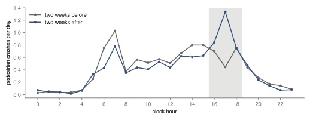
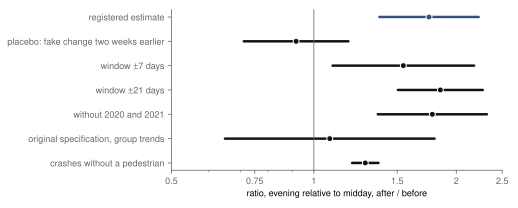
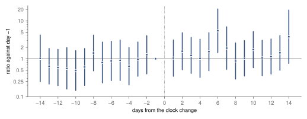
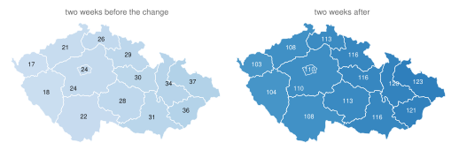

Research · roads · the autumn clock change, 2016–2025
When the clocks go back: evening darkness and pedestrian crashes in Czechia
In ten autumns of Czech police records, the evening-to-midday ratio of pedestrian crashes was 1.75 times as high after the clocks went back than before (1.38–2.23), supported; the originally registered model is inconclusive.
- evening-to-midday ratio, after against before
- ×1.75 pedestrian crashes, 16:00–18:59 against 10:00–13:59 · 95 % confidence interval (CI) 1.38 to 2.23 · supported; original model ×1.08, inconclusive
- morning, 06:00–07:59
- ×0.77 95 % CI 0.57 to 1.04 · inconclusive
- the same jump per hour of darkness, secondary model
- +118 % against the evening mean before the change · 95 % CI 84 to 153 %, for the numerator only · a linear extrapolation, not independent evidence
- pedestrian crashes in the windows, with a known hour
- 2 768 two weeks either side of ten changes · police records
Overwhelmed? Here's the short version
- When the clocks go back at the end of October, dusk moves from after the evening rush into it, overnight. Over ten autumns, evening pedestrian crashes rose from 266 in the two weeks before to 410 after, while midday crashes fell from 317 to 279; most of the rise is in the hour from 17:00.
- Not all of that can be put on the clock hour: the window also holds about 25 minutes of natural darkening, the 17:00 hour was unusually quiet before the change, and the school autumn break, the public holiday of 28 October and All Saints' and All Souls' days (1–2 November) fall in it. A fake change two weeks earlier gives 0.92 (0.71 to 1.18), which makes the shortening days alone an unlikely source of the whole jump.
- The main model was simplified after a power calculation, before the data were opened. The originally registered version, with separate trends for the evening and the morning, gives 1.08 (0.65 to 1.80), inconclusive.
- Leaving out one autumn at a time, a check added after publication, keeps the ratio between 1.58 and 1.91; 2017 and 2023 together contribute 75 of the 144 extra evening crashes.
Photo: Martin Kopta · CC BY 3.0, toned
.jpeg){kind=link}
Twice a year, Europe moves its clocks, and twice a year the argument returns about whether it should stop. The European Parliament voted in March 2019 to end the changes, and the member states have not agreed on what to keep since1. Most of that argument is about sleep, energy and preference. A narrower question has a cleaner answer: when the clocks go back in autumn and the evening rush suddenly gets darker, are pedestrian crashes in the evening higher relative to the rest of the day?
The question is narrow on purpose. On the last Sunday of October, Czech clocks go from summer time to winter time, and the sun sets an hour earlier by the clock. In Prague, sunset moves from about 17:50 to about 16:50 overnight. Nothing else about the day changes: offices, schools and shops keep their clock times, so the same people walk home at the same clock hour, but the second half of that walk is now in the dark. In the morning it works the other way: the hour around 7:00 gets lighter. Few things that matter for safety change so sharply on a known date, which is why the clock change has been used to measure what darkness does to road users. Sullivan and Flannagan, comparing the weeks around the changes in the United States, found that darkness raises the risk of a fatal crash for pedestrians far more than for people in cars2; Smith, using the spring change, found that the lost hour of sleep raises fatal crashes too3. This study asks the autumn question of Czech police records, which cover every recorded crash, fatal or not, for ten years.
Data
The Police of the Czech Republic publish every road accident they record, one row per accident, in yearly archives4. Each row has the date and the clock time, the region, and the kind of accident; kind 4 is "collision with a pedestrian". The archives with records go back to 2016; earlier years exist only as printed yearbooks. Across the ten years they hold 979 707 accidents. Until 2022 each region's records are in a separate file without a district; from 2023 the district is included. To treat all ten years alike, the study works with the fourteen regions.
For each autumn, the window is two weeks before the change and two weeks after it, with the day of the change itself left out, because it has 25 hours. In those windows the police recorded 2 780 crashes with a pedestrian. For 12 of them (0.4 %) the hour is unknown, which leaves 2 768 for the analysis, about 9.9 a day for the whole country; for other kinds of crash the hour is unknown for 13 %, mostly minor damage reported later. The unit of analysis is a region on a date in a clock hour, with zero where no crash was recorded. The registered model uses 35 280 such cells, the nine hours of the three groups below over the two-week windows; the published file, 164 640 cells, covers every hour and the wider windows used by the checks.
Three groups of hours matter. The evening group is 16:00 to 18:59, which goes from mostly light to mostly dark at the change. The morning group is 06:00 to 07:59, which goes the other way. The control group is 10:00 to 13:59, which is light on both sides. For every region and hour, the sun's position was computed from astronomy alone5: an hour counts as dark for the share of it after civil dusk or before civil dawn, when the sun is more than six degrees below the horizon. By that measure, 17 % of the evening hours were dark in the two weeks before the change and 64 % after it; the morning went from 47 % dark to 16 %. The police form records the light conditions at each crash as well, and it agrees: the share of evening crashes recorded "at night" went from 24 % to 65 %, and in the morning from 43 % to 15 %.
The raw counts already show the shape (fig. 1). Before the change, pedestrian crashes have two peaks, at 7:00 and in the afternoon from 14:00 to 16:00, and the hour from 17:00 to 18:00 is quieter than the hours around it. After the change, that hour becomes the worst of the day: 17:00 to 17:59 is where the new peak sits. The morning peak at 7:00 shrinks. The midday hours change little. Across the three evening hours, the national rate went from 1.90 to 2.93 pedestrian crashes a day.
Two features of these counts limit how far the jump can be read. Almost all of it is in one hour: across the ten autumns, the hour from 17:00 went from 62 pedestrian crashes before the change to 187 after it, while the hour from 16:00 went from 98 to 118 and the hour from 18:00 from 106 to 105. Before the change the 17:00 hour is unusually quiet against its neighbours, and nothing in the data explains why, so part of its rise may be a return from a low base rather than an effect of darkness. The rise is also uneven across autumns: 2017 and 2023 together contribute 75 of the 144 extra evening crashes, and in four autumns (2018, 2019, 2020 and 2024) the evening count rose by five or fewer. A check that leaves out one autumn at a time was not registered; it was run after publication and is reported under Checks.
Descriptive: over ten autumns, evening pedestrian crashes rose from 266 in the two weeks before the change to 410 after it, while midday crashes fell from 317 to 279.

How this was done
The design, the hypotheses and the rule for reading the result were committed before any accident record was downloaded. The code was committed and tested on invented data before the records were read. The registration is self-timestamped: commit times are recorded by the author's own machine and pushed to a public repository the same evening, so they show the order of steps, not an independent seal.
The comparison is a difference in differences across hours. The midday hours stand for everything that changes across the four weeks of the window and is not darkness at a particular hour: the weather turning, school holidays, the first frosts, the general drift into November. The evening hours carry all of that plus the jump in darkness. So the estimate is the change in evening crashes from before to after the clock change, relative to the change in midday crashes. It measures an effect of the clock change only under the assumption that, without the change, evening and midday crashes would have moved in the same proportion across the window; the natural darkening, the school autumn break, the public holiday of 28 October, All Saints' and All Souls' days (1–2 November) and weather that hits evenings differently from middays could each break that assumption. In the raw counts, evening crashes rose from 266 to 410 (×1.54) while midday crashes fell from 317 to 279 (×0.88); the ratio of the two, 1.75, is the difference in differences before any adjustment. The model is a Poisson regression on the cell counts, estimated by pseudo-maximum likelihood: it fits the expected count in each cell without assuming the counts follow a Poisson distribution exactly, which keeps it reliable for counts with many zeros as long as the expected counts are modelled right6. It has a separate level (a fixed effect) for every region in every year, for every day of the week and for every clock hour, plus a common linear trend across the window. It is estimated with pyfixest7, and standard errors are clustered by date, so that a bad-weather day counts as one piece of evidence, not as many. The registered estimate is the ratio by which the change multiplies evening crashes relative to midday. The rule was set in advance: "supported" if its 95 % interval lies wholly above 1, "not supported" if it lies within 0.90 to 1.10, and "inconclusive" otherwise. The morning got the same rule with the direction reversed.
One choice was changed before the data were opened, and it matters for how to read the result. The first design also gave the evening and the morning their own day-by-day trends, to separate the jump at the change from the steady shortening of the days. A power calculation from the police's published monthly totals showed that with ten autumns this version could reliably detect only a doubling of evening crashes. The trends were dropped from the main model and kept as a registered check. The cost is that the main estimate includes some natural darkening, about 25 minutes of earlier dusk over the two weeks, besides the clock's hour. Two checks were registered to bound it: a placebo that pretends the change happened two weeks earlier, inside a window with no real change, and a model that uses the sun's position directly.
Evening-to-midday crash ratio after against before the change
In the two weeks after the clocks go back, the ratio of crashes with a pedestrian between 16:00 and 19:00 to those at midday is 1.75 times the ratio in the two weeks before (95 % CI 1.38 to 2.23). The interval lies wholly above 1, so by the rule set in advance the evening hypothesis is supported. In the windows of the ten autumns, the police recorded 266 pedestrian crashes in the evening hours before the change and 410 after it, while midday crashes fell from 317 to 279. Applying the ratio to the count, about 176 of the 410 evening crashes after the change are the excess over what the evening before the change, scaled by midday, would predict, around 18 a year in two weeks. Not all of that excess is attributable to the clock hour: it includes the steady seasonal darkening of the two weeks, any difference the holidays in the window make between evening and midday, and a return of the 17:00 hour from an unusually low base, and the evening before the change was not fully light, nor the evening after it fully dark. It is a back-of-the-envelope figure, and it covers only the crashes the police recorded.
In the morning, the ratio to midday after the change is 0.77 times the ratio before (0.57 to 1.04). The direction is the one darkness predicts, the morning getting lighter, but the interval includes 1, so the morning hypothesis is inconclusive. The morning group has two hours rather than three and, after the change, fewer crashes, so its interval is wider. The two groups do not change by the same amount of light either. By the sun's position, the evening group loses about 85 minutes of light a day across its three hours, while the morning group gains about 37 across its two, so a larger evening jump in the ratio is expected even before any difference in who is on the road. Whether the evening is also worse per minute of darkness, the data cannot say.
Is it the darkness?
The second registered model treats the clock change as an instrument: a source of change in darkness that is assumed to affect crashes only through darkness. That assumption is not certain; the change also shifts sleep, which Smith found matters in spring3. The model asks a more general question: how much higher is the expected number of pedestrian crashes in a region in an hour in the dark than in the light? The clock change shifts darkness only in the morning and evening hours, so the hours 6 and 7 and 16 to 18 after the change are used to predict each cell's dark share; the prediction is then related to the crash counts, with the same fixed effects and trend. The result: a region-hour in full darkness has 0.054 more pedestrian crashes than the same hour in daylight (95 % CI 0.038 to 0.069). Before the change, an evening region-hour averaged 0.045, so this is the same jump scaled per hour of darkness, +118 % (+84 to +153 %, an interval for the numerator only).
This model does not provide an independent test. Its instruments are the same before-and-after contrast in the shifted hours that the main model uses, so the natural darkening inside the window is inside them too; it rescales the same jump per hour of darkness. The rescaling is an extrapolation: the evening hours changed by about half an hour of darkness each, and the model projects that to a full hour. It is a linear model on counts, chosen in the design for its simplicity, it pools the morning and evening hours, and its percentage is taken against the evening mean before the change, whose own uncertainty is ignored. Its agreement with the main estimate in direction and size is therefore expected, not corroboration. The direction matches the American study's finding that ambient light is associated with the evening risk for pedestrians2.
The fourteen regions do not get dark at the same time. The regions' centres span about five degrees of longitude, so dusk in Moravia-Silesia comes about twenty minutes before dusk in Karlovy Vary. In the two weeks before the change, 37 minutes of the three-hour evening rush were after civil dusk in Moravia-Silesia, the earliest, and 17 in Karlovy Vary, the latest; after the change, 123 and 103 (fig. 4). In Prague the figure jumps from 24 to 110 minutes. The clock change moves every region by about the same hour; the regional differences are small against it, which is why the map is shown for orientation rather than as a separate test.
Checks
The placebo is the most important check, because it measures the alternative explanation directly. It applies the same model to the four weeks before the change and pretends the clocks went back halfway through them. In those weeks, the days shorten just as they do around the real change, but there is no jump. The placebo ratio is 0.92 (0.71 to 1.18). Its interval includes 1 but is not narrow enough to count as "no effect" under the rule used for the main hypothesis. It makes it unlikely that two weeks of natural darkening alone produce a jump as large as 1.75, but does not exclude a contribution of up to about 18 %.
The registered stricter specification, with separate day trends for the evening and the morning, gives 1.08 (0.65 to 1.80). It does not confirm the jump in the ratio; it does not contradict it either. Its interval is so wide that it could hold anything from a 35 % fall to an 80 % rise, which is what the power calculation predicted before the data were opened. Its point estimate is also much lower than 1.75: giving the evening its own trend absorbs most of the jump, not only widening the interval. It is reported because it was registered, and a reader who trusts only that specification should read this study as inconclusive.
The estimate grows with the window: 1.55 (1.10 to 2.18) with one week either side, 1.75 with two and 1.85 (1.51 to 2.27) with three. A trend contribution would produce that pattern, though the intervals overlap widely. Leaving out the autumns of 2020 and 2021, when curfews and closures changed who was on the streets, gives 1.78 (1.36 to 2.32). Crashes without a pedestrian, which were registered as a secondary outcome rather than a placebo, also rise in the evening after the change, by less: 1.28 (1.20 to 1.37). For them the hour is unknown in 13 % of records, so the comparison with pedestrians is rough, and the study does not test why the two differ.
One check was added after publication, on 9 October 2026, and is not registered. Refitting the registered model ten times, each time without one autumn, gives ratios from 1.58 (without 2023) to 1.91 (without 2018), and every interval stays above 1, the lowest lower bound being 1.23. No single autumn carries the estimate, although 2017 and 2023 together contribute 75 of the 144 extra evening crashes in the raw counts.
Evening crashes rise 1.75 times against midday (1.38–2.23), supported; the placebo stays near 1, but the original registered model, 1.08, is inconclusive.

The registered event study estimates the evening-to-midday ratio day by day, each day against the day before the change (fig. 3). One day is a small sample, so each day's interval is wide, typically spanning a factor of about ten; only day 6 after the change in the evening series (5.45, 1.45 to 20.49) has an interval that excludes 1. Read as a pattern, 10 of the 13 days before the change sit below the reference and 13 of the 14 days after it above, and most days in the second week before the change sit lower than those in the first. Because every day is measured against the day before the change, that is the pattern a steady rise in the evening-to-midday ratio (or an unusually high reference day) would produce as well as a jump at the change, so the day-by-day series cannot tell a jump from a trend; the placebo and the group-trend model above are the checks on that alternative. The same model's morning series cannot be read: on the reference day the police recorded 2 morning pedestrian crashes across the ten autumns, so every other day is measured against almost nothing, and on one Sunday with no morning crash at all the estimate is zero.
One day is a small sample: only day 6 has an interval above 1, but 13 of the 14 days after the change sit above the reference and 10 of the 13 before it below.


What this means
Measured: in the two weeks after the clocks go back, the ratio of evening to midday pedestrian crashes in Czechia is about 75 % higher than in the two weeks before, and the rise is concentrated in the hour that switches from light to dark. A fake change two weeks earlier, in weeks that darken just as steadily, shows no ratio of comparable size, and no single autumn carries the result. That rests on a model amended before the data were opened; the originally registered model is inconclusive.
Inferred, with the assumption stated above: that part of the rise comes with the clock hour. How much of it is the one hour, and how much the natural darkening, the holidays in the window or a return of the 17:00 hour from a low base, the data cannot say. Evening risk is higher in the two weeks after the change; whether the excess fades later was not measured. For the European argument about the clocks, the study says little: permanent winter or summer time would move darkness differently from the one-hour step measured here.
What this does not show
The data are crashes the police recorded. Crashes with a pedestrian usually involve an injury and are more likely to reach the police than a scraped bumper, but some are surely missing, and the share is unknown. The study cannot see how many people walk in each hour, so it holds exposure fixed only to the extent that people keep their clock-time routines across the change, which is the premise of the design but not something the records can confirm. It says nothing about severity: the counts include light injuries and deaths alike, and ten autumns have too few deaths to study them separately. It does not measure the spring change, sleep, or health. The main estimate includes some natural darkening, as explained above, and the registered specification that removes it is too imprecise to confirm the jump or make it unlikely. The windows contain the school autumn break, the public holiday of 28 October and All Saints' and All Souls' days (1–2 November), which change who is on the streets at which hour in some years and not others, and the weather of each autumn was not measured, so a wet or foggy fortnight after the change in a few years could carry part of the ratio. Finally, the unit is the region, because districts are recorded only since 2023; a finer map would need finer data.
Reproduction
Every number on this page is filled in from assets/dst/results.json by a script. From the repository root:
tools/dst/collect.py: the ten yearly archives and their hashes.prepare.py: the region × date × hour cells and the sun's position (sun.py).estimate.py: the registered estimates and checks.posthoc.py: the leave-one-autumn-out check added after publication, written todocs/research/dst-darkness-posthoc.json.article.py: the figures and this page.
The design is docs/research/dst-darkness-design.md, the power calculation tools/dst/power.py.
References
- European Parliament, Ask EP (2023). What measures has the European Union taken on seasonal clock changes? European Parliament Think Tank blog, 27 March 2023 (the Parliament's legislative resolution of March 2019 supporting the end of seasonal changes, and the Council's lack of a position). epthinktank.eu. Accessed 9 October 2026.
- Sullivan, J. M., Flannagan, M. J. (2002). The role of ambient light level in fatal crashes: inferences from daylight saving time transitions. Accident Analysis & Prevention 34(4), 487–498. doi:10.1016/S0001-4575(01)00046-X. Accessed 2 October 2026.
- Smith, A. C. (2016). Spring forward at your own risk: daylight saving time and fatal vehicle crashes. American Economic Journal: Applied Economics 8(2), 65–91. doi:10.1257/app.20140100. Accessed 2 October 2026.
- Policie České republiky. Statistika nehodovosti: yearly accident record files 2016–2025 and the list of form items. archiv.policie.gov.cz. Accessed 2 October 2026.
- NOAA Global Monitoring Laboratory. Solar calculation details (the solar-position equations). gml.noaa.gov/grad/solcalc. Accessed 2 October 2026.
- Santos Silva, J. M. C., Tenreyro, S. (2006). The log of gravity. The Review of Economics and Statistics 88(4), 641–658. doi:10.1162/rest.88.4.641. Accessed 2 October 2026.
- Fischer, A., and contributors. pyfixest: fast high-dimensional fixed-effects regression in Python, version 0.60.0. github.com/py-econometrics/pyfixest. Accessed 2 October 2026.
- Natural Earth. Admin 1 – states, provinces, 1:10m, version 5.1.2. Public domain. naturalearthdata.com. Accessed 2 October 2026.